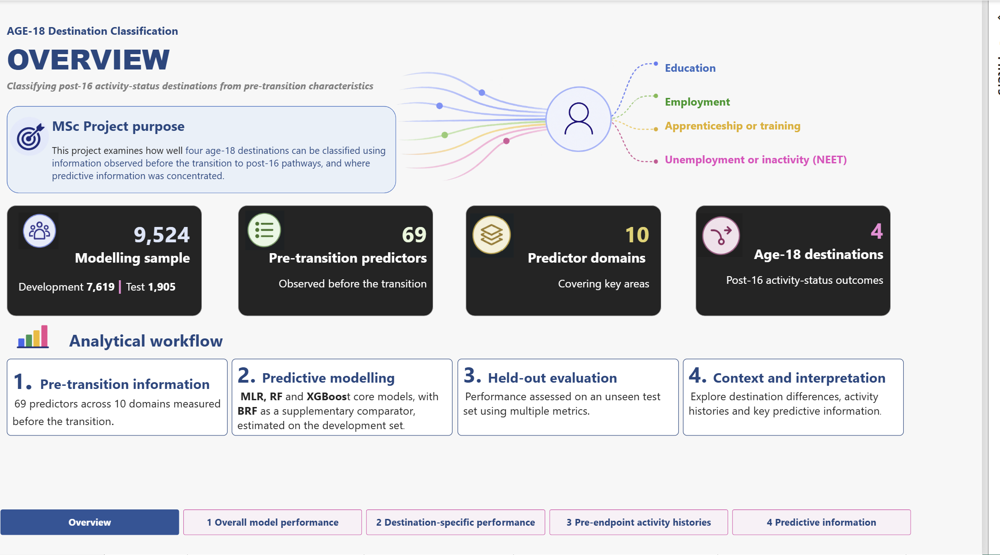
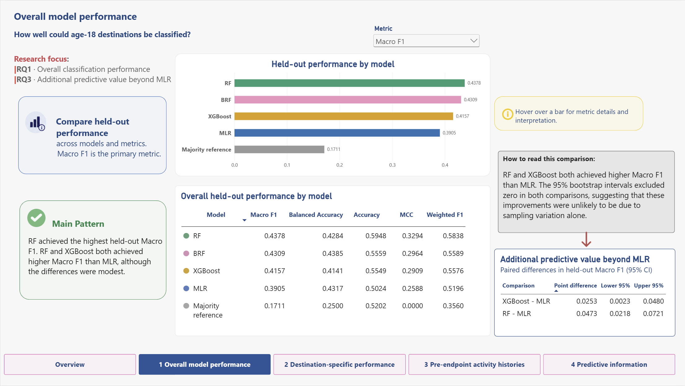
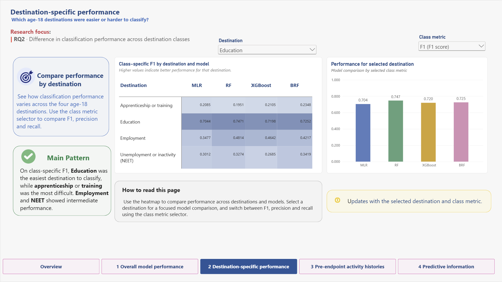
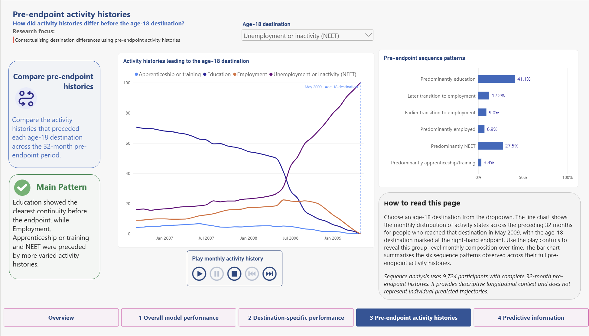
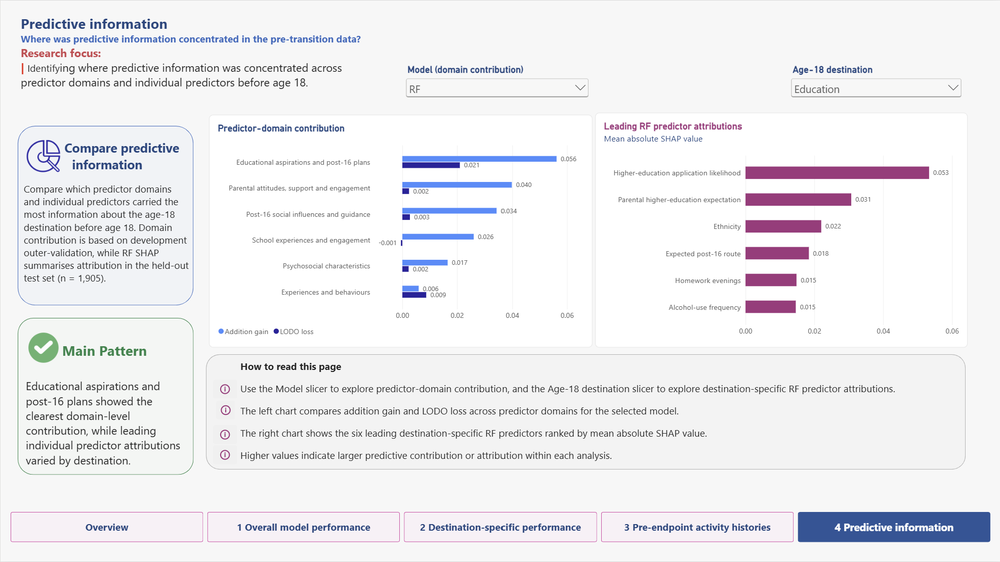

Power BI
Interactive Reporting Artefact
The Power BI report was developed as the interactive reporting component of the project, allowing selected aggregate findings to be explored across model performance, destination-specific performance, pre-endpoint activity histories and predictive information.
The report uses anonymised or pre-aggregated outputs. Public interactive sharing was not available through the institutional Power BI account, so static screenshots of the completed report are presented here.
Overview
Project purpose, analytical sample and overall workflow.

1. Overall model performance
Held-out model comparison across overall evaluation metrics.

2. Destination-specific performance
Comparison of classification performance across the four age-18 destinations.

3. Pre-endpoint activity histories
Descriptive comparison of activity histories preceding the age-18 destinations.

4. Predictive information
Predictor-domain contribution and destination-specific RF predictor attributions.
